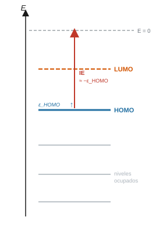
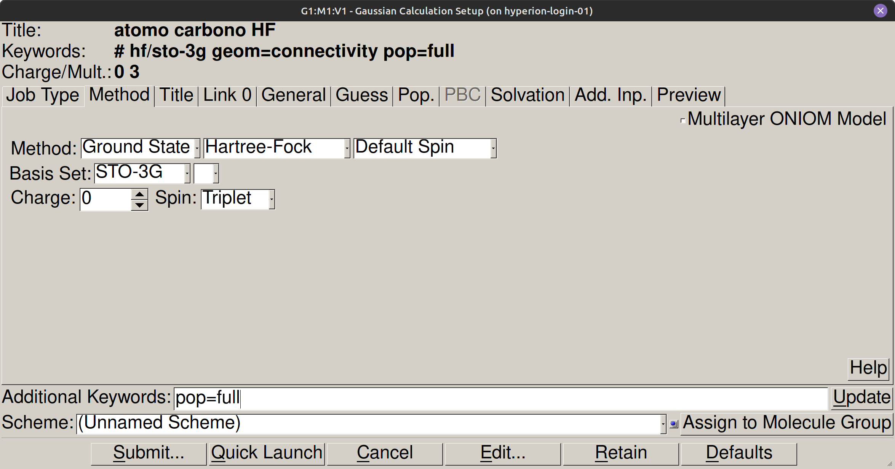
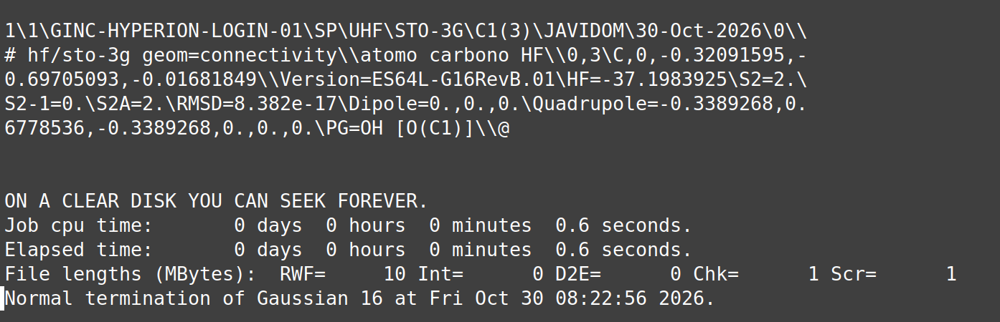
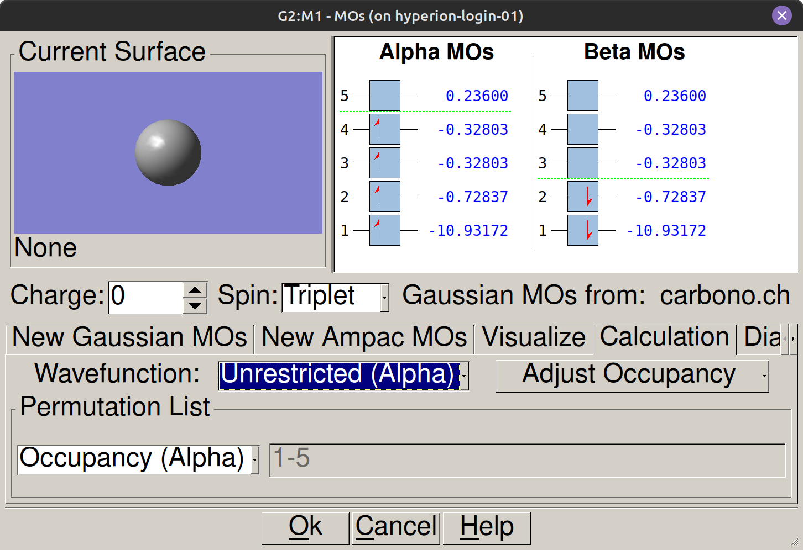
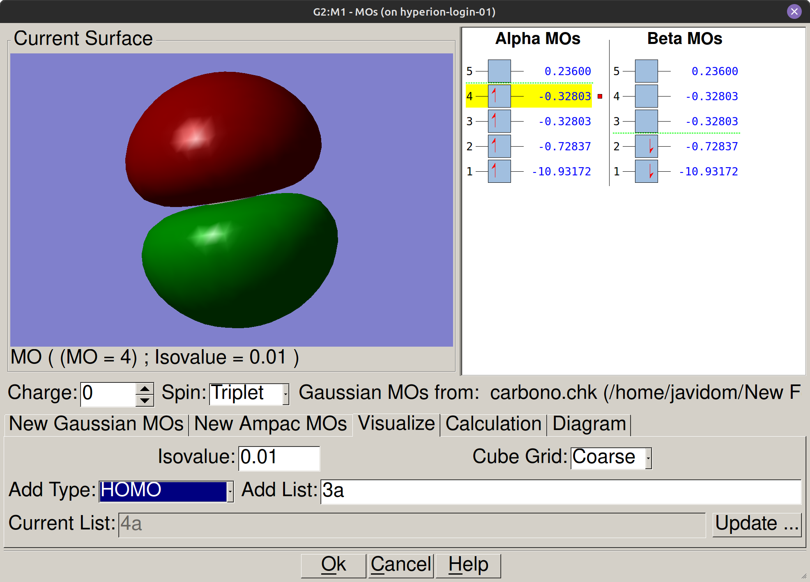

Átomos y el teorema de Koopmans#
Introducción#
La energía de ionización mide la fuerza de atracción que ejerce el núcleo sobre los electrones más externos y determina la reactividad química y las tendencias periódicas de los elementos. Mediante cálculos de Hartree-Fock en Gaussian, se aplican dos aproximaciones complementarias para evaluar esta propiedad: la diferencia directa de energía total entre el átomo neutro y su catión (\(\Delta E\)), y la estimación a partir del orbital ocupado de mayor energía mediante el teorema de Koopmans (\(-\varepsilon_{\text{HOMO}}\)).
Objetivos#
Calcular la energía electrónica total de átomos neutros y cationes monocargados mediante el método Hartree-Fock en Gaussian 16, Revision A.03.
Determinar la energía de ionización por diferencia autoconsistente (\(\Delta E\)) y por estimación orbital mediante el teorema de Koopmans (\(-\varepsilon_{\text{HOMO}}\)).
Comparar las energías de ionización calculadas frente a valores experimentales a lo largo del primer y segundo período.
Visualizar la distribución espacial y la simetría de los orbitales atómicos ocupados de mayor energía (HOMO) en GaussView.
Conceptos clave#
¿Por qué las energías son negativas?#
La energía electrónica de un átomo se mide respecto al estado de referencia en que el núcleo y todos los electrones se encuentran en reposo y separados en el infinito, con interacción nula. Como el átomo ligado es más estable que ese estado de referencia, su energía es siempre negativa. Cuanto más negativo es el valor que aparece en la línea SCF Done, mayor es la estabilidad del sistema. Un resultado positivo en la energía total indicaría un error en la configuración del cálculo.
El HOMO y el LUMO#
Los orbitales moleculares se ordenan de menor a mayor energía. El orbital ocupado de mayor energía recibe el nombre de HOMO (del inglés Highest Occupied Molecular Orbital) y contiene los electrones más fáciles de extraer. El primer orbital desocupado, el LUMO (Lowest Unoccupied Molecular Orbital), es el orbital disponible para recibir electrones. La diferencia entre el nivel del HOMO y el nivel de vacío constituye una primera estimación de la energía necesaria para arrancar un electrón del sistema.
Nota
En la salida de Gaussian con pop=full, la energía del HOMO corresponde al último valor numérico de la última línea Alpha occ. eigenvalues. El primer valor de la línea siguiente Alpha virt. eigenvalues corresponde al LUMO.


La energía de ionización y el Teorema de Koopmans#
La energía de ionización de un átomo neutro \(A\) en fase gas es la energía mínima necesaria para extraer un electrón y generar el catión \(A^+\) según el proceso \(A \rightarrow A^+ + e^-\). En esta práctica se calcula por dos vías independientes. La primera es la diferencia directa de energías SCF entre el catión y el átomo neutro, lo que exige dos cálculos separados. La segunda se basa en el teorema de Koopmans, que permite estimar ese valor a partir únicamente de la energía del orbital HOMO del átomo neutro, sin necesidad de calcular el catión.
Nota
El teorema de Koopmans adopta la aproximación de orbitales congelados, asumiendo que los orbitales del catión \(A^+\) son idénticos a los del átomo neutro \(A\). En un proceso físico de ionización, la pérdida de un electrón reduce la repulsión interelectrónica global y provoca la contracción de la nube electrónica restante hacia el núcleo (relajación orbital). Como la aproximación de Koopmans ignora tanto esta relajación estabilizadora como las diferencias de energía de correlación, \(-\varepsilon_{\text{HOMO}}\) discrepa ligeramente del valor calculado por diferencia autoconsistente \(\text{IE}_{\Delta E}\).
La multiplicidad de espín#
La multiplicidad de espín indica cuántos estados cuánticos de espín son accesibles para el sistema y se calcula como \(2S+1\), donde \(S\) es la suma de los espines de los electrones desapareados. Un átomo con todos los electrones apareados tiene \(S=0\) y multiplicidad 1 (singlete). Un electrón desapareado da \(S=1/2\) y multiplicidad 2 (doblete). Asignar un valor de multiplicidad incorrecto provoca que Gaussian distribuya mal los electrones entre los orbitales \(\alpha\) y \(\beta\), lo que invalida el resultado o impide la convergencia del ciclo SCF.
Advertencia
Verificar siempre el valor de multiplicidad de espín antes de enviar el cálculo: un valor incorrecto invalida los resultados o impide la convergencia SCF.
Procedimiento#
Atención
Verificación obligatoria tras cada cálculo: abrir el archivo .log con el editor de texto y confirmar la presencia de la línea final exacta:
Normal termination of Gaussian 16
Paso 1: Abrir GaussView y dibujar el átomo#
Abrir GaussView desde el menú de aplicaciones o lanzador del sistema.
Abrir la paleta de fragmentos atómicos mediante View → Element Fragments (o pulsando el icono de la tabla periódica en la barra de herramientas superior).
Seleccionar el elemento químico que se desea calcular (por ejemplo, carbono, C).
Hacer un único clic con el botón izquierdo sobre la ventana central de dibujo. Aparecerá un centro atómico aislado sin enlaces.
Paso 2: Configurar el cálculo del átomo neutro#
Acceder al menú Calculate → Gaussian Calculation Setup.
En la pestaña Job Type, seleccionar Energy.
En la pestaña Method, configurar los parámetros del cálculo:
Campo |
Valor |
|---|---|
Method |
HF |
Basis Set |
STO-3G |
Charge |
0 |
Spin (Multiplicity) |
Consultar la tabla de multiplicidades para cada átomo neutro |
En la pestaña Title, escribir una descripción identificativa (por ejemplo,
C neutro HF STO-3G).En la pestaña Additional Keywords, escribir exactamente:
pop=full. Esta instrucción incluye las energías de todos los orbitales moleculares en el archivo de salida.
Tabla de multiplicidades de referencia (\(2S+1\)):
Átomo |
\(Z\) |
Configuración |
Multiplicidad |
|---|---|---|---|
H |
1 |
1s¹ |
2 |
He |
2 |
1s² |
1 |
Li |
3 |
[He] 2s¹ |
2 |
Be |
4 |
[He] 2s² |
1 |
B |
5 |
[He] 2s² 2p¹ |
2 |
C |
6 |
[He] 2s² 2p² |
3 |
N |
7 |
[He] 2s² 2p³ |
4 |
O |
8 |
[He] 2s² 2p⁴ |
3 |
F |
9 |
[He] 2s² 2p⁵ |
2 |
Ne |
10 |
[He] 2s² 2p⁶ |
1 |


Paso 3: Lanzar el cálculo y guardar el archivo#
Pulsar el botón Submit en la parte inferior de la ventana Gaussian Calculation Setup.
En el cuadro de diálogo para guardar, indicar el nombre del archivo de entrada
.gjf(por ejemplo,C_neutro_HF_STO3G.gjf) y guardarlo en el directorio de trabajo del laboratorio:{{practicas_folder}}.Confirmar el cuadro de diálogo pulsando Save y a continuación Submit.
Observar el estado de ejecución en la barra inferior de GaussView hasta que el cálculo finalice (pocos segundos para elementos ligeros).
Paso 4: Verificar la terminación correcta#
Abrir el archivo
.loggenerado (C_neutro_HF_STO3G.log) con el editor de texto del sistema (File → Open en el editor o clic derecho en el archivo).Desplazarse al final del archivo con Ctrl + Fin.
Confirmar que la última línea del archivo coincide exactamente con:
{{termination_ok}}. Si no aparece, el cálculo falló y no deben usarse sus datos.


Paso 5: Leer la energía total E(N)#
En el archivo
.logabierto en el editor de texto, pulsar Ctrl + F para activar la búsqueda.Escribir el texto de búsqueda:
SCF Done.Localizar la energía total en la línea
SCF Done: E(RHF) = ...(para sistemas de capa cerrada con multiplicidad 1) oSCF Done: E(ROHF) = ...(para capa abierta con multiplicidad distinta de 1).Copiar el valor numérico en unidades atómicas (A.U. / Hartrees) y pegarlo en la columna \(E(N)\) de la tabla de resultados.
Paso 6: Leer la energía orbital del HOMO y visualizar el orbital#
Lectura numérica en el archivo
.log:En el archivo
.logabierto en el editor, buscar con Ctrl + F el texto:Alpha occ. eigenvalues.Localizar el último número de la última línea
Alpha occ. eigenvalues --. Ese valor numérico corresponde a la energía del orbital ocupado de mayor energía, \(\varepsilon_{\text{HOMO}}\) (en Hartrees).Localizar el primer número de la línea inmediata siguiente
Alpha virt. eigenvalues --, correspondiente al orbital desocupado de menor energía (\(\varepsilon_{\text{LUMO}}\)).Copiar el valor de \(\varepsilon_{\text{HOMO}}\) (en Hartrees) en la columna correspondiente de la tabla de resultados.
Comprobación y visualización en GaussView:
En GaussView, abrimos el archivo
.chkresultante del cálculo y accedemos al menú Results → MOs.En la pestaña New Gaussian MOs observamos el diagrama de niveles de energía y la ocupación de los orbitales para los espines \(\alpha\) y \(\beta\). Para el carbono neutro en estado triplete, el orbital ocupado de mayor energía (\(\alpha\), orbital 4) tiene una energía de \(-0.32803\text{ Ha}\).


Para generar la distribución tridimensional del orbital, accedemos a la pestaña Visualize dentro de esa misma ventana. Seleccionamos el orbital 4 (HOMO), establecemos el campo Isovalue en
0.01y pulsamos Update. En la subventana izquierda aparecerán los dos lóbulos del orbital atómico \(2p\).


Paso 7: Configurar y calcular el catión A⁺#
Regresar a GaussView con el mismo centro atómico en pantalla.
Abrir nuevamente el panel Calculate → Gaussian Calculation Setup.
En la pestaña Method, modificar los siguientes parámetros:
Charge: cambiar de
0a1.Spin: ajustar a la multiplicidad correspondiente a la especie catiónica (ver tabla inferior). Al arrancar un electrón del HOMO, el número de electrones desapareados cambia.
Mantener Job Type en
Energy, Method enHF, Basis Set enSTO-3Gy la palabra clavepop=fullen Additional Keywords.En la pestaña Title, escribir:
C cation HF STO-3G.Pulsar Submit, guardar con nombre representativo (por ejemplo,
C_cation_HF_STO3G.gjf) en{{practicas_folder}}y confirmar el envío.Verificar la terminación correcta en el nuevo
.logy extraer la energía total \(E(A^+)\) en la líneaSCF Done.
Campo |
Neutro |
Catión |
|---|---|---|
Charge |
0 |
+1 |
Spin |
Multiplicidad neutro |
Multiplicidad catión |
Paso 8: Calcular las energías de ionización#
Calcular la energía de ionización por diferencia directa (\(\text{IE}_{\Delta E}\)):
\[\text{IE}_{\Delta E} = \bigl[E(A^+) - E(A)\bigr] \times 27.2114 \quad [\text{eV}]\]Calcular la estimación del teorema de Koopmans (\(\text{IE}_{\text{Koopmans}}\)):
\[\text{IE}_{\text{Koopmans}} = -\varepsilon_{\text{HOMO}} \times 27.2114 \quad [\text{eV}]\]Registrar ambos valores en electronvoltios en la tabla de datos y calcular la desviación porcentual respecto al valor experimental de referencia.
Resultados y análisis#
Para cada átomo calculado, registramos las dos energías extraídas del archivo .log y calculamos ambas estimaciones de la energía de ionización. La tabla siguiente recoge los valores en Hartrees y los resultados ya convertidos a eV. Los valores experimentales de referencia se incluyen para calcular el error porcentual.
Bibliografía#
Gaussian 16, Revision A.03, M. J. Frisch, G. W. Trucks, H. B. Schlegel et al., Gaussian, Inc., Wallingford CT, 2016.
Atkins, P.; De Paula, J. Química Física, 10ª ed.; Editorial Médica Panamericana, 2018. Cap. 9 (Estructura electrónica atómica).
NIST Chemistry WebBook, https://webbook.nist.gov (datos experimentales de energía de ionización).
Szabo, A.; Ostlund, N. S. Modern Quantum Chemistry. Dover, 1996.
Para ir más lejos (opcional)
Esta exploración estudia cómo varía la calidad del resultado al ampliar el conjunto de funciones de base. Repetimos el cálculo del átomo de carbono neutro con tres bases de diferente tamaño y comparamos la energía del HOMO y la energía de ionización estimada por Koopmans frente al valor experimental. El procedimiento es idéntico al de la práctica principal: cambiamos únicamente el campo Basis Set en Gaussian Calculation Setup → Method.
Base |
\(\varepsilon_{\text{HOMO}}\) (Ha) |
IE\(_{\text{Koopmans}}\) (eV) |
IE exp. (eV) |
Error (%) |
|---|---|---|---|---|
STO-3G |
−0.328 |
8.93 |
11.26 |
20.7 |
3-21G |
(a calcular) |
(a calcular) |
11.26 |
(a calcular) |
6-311G |
(a calcular) |
(a calcular) |
11.26 |
(a calcular) |
Nota
¿En qué sentido varía \(\varepsilon_{\text{HOMO}}\) al aumentar el tamaño de la base? ¿Disminuye el error respecto al valor experimental de forma monótona, o hay algún caso en que una base mayor no mejora el resultado? Relaciona las diferencias con la capacidad de cada base para describir la densidad electrónica en la región de valencia.